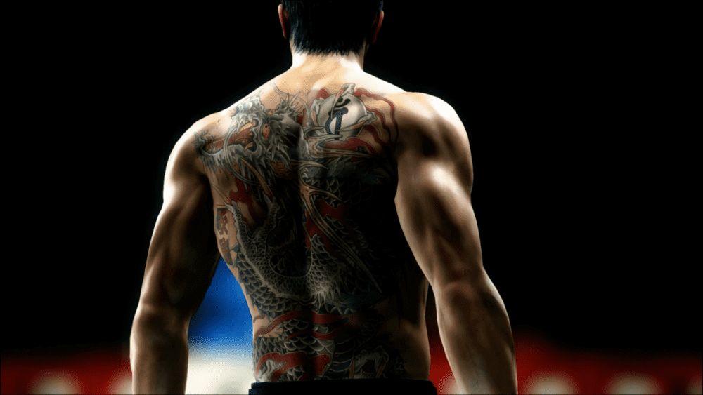
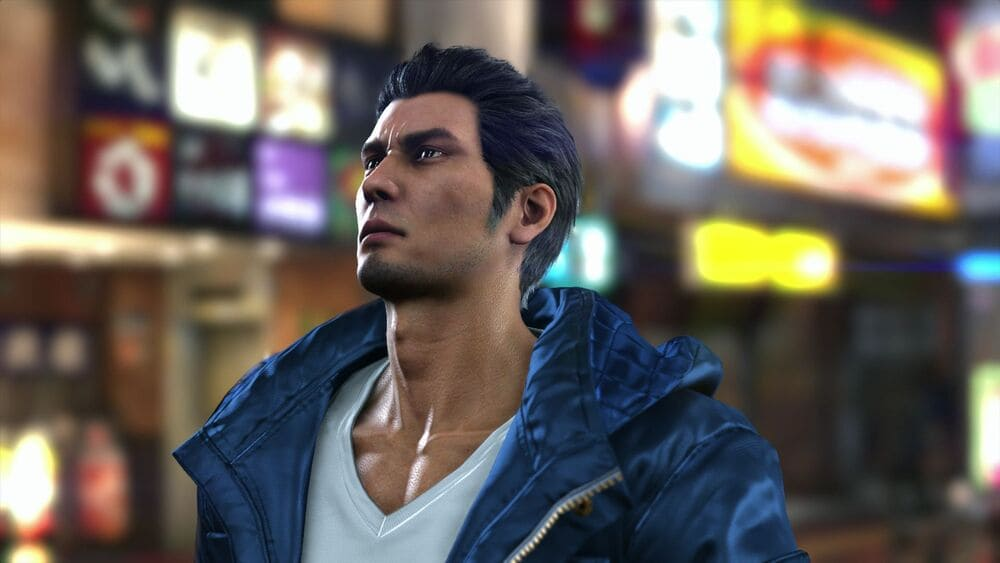
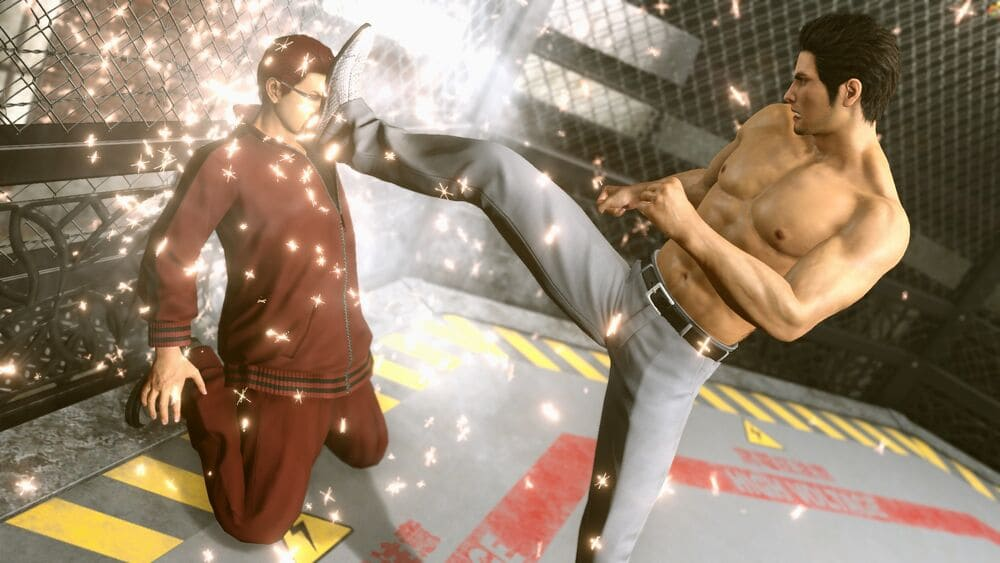
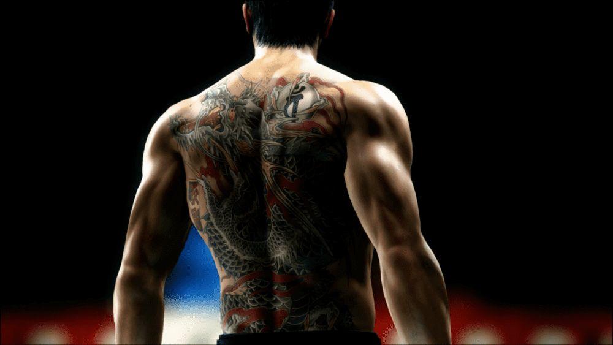
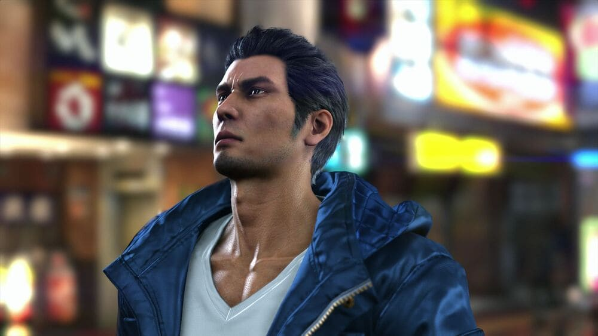
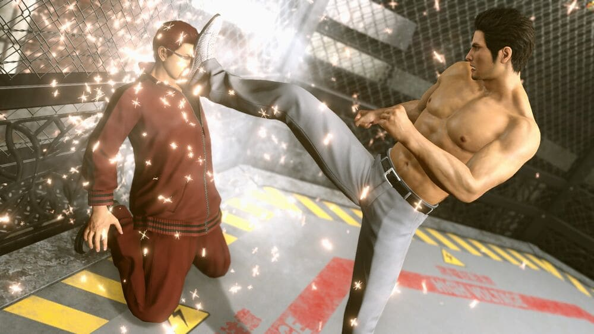

"Demorei quarenta anos a perceber isto. Mas para caras como nós... Nossas vidas não são realmente as nossas. Há sempre alguém novo para ajudar. Alguém que precisamos de proteger. Nestes últimos anos, lutei esse destino com tudo o que tinha. Mas já não luto mais. É hora de aceitar a tarefa que me foi dada. Há muitas pessoas que dependem de nós. Os seus sonhos dependem de nós."
- Kiryu Kazuma
Kazuma Kiryu é o protagonista mais recorrente da série Yakuza. É apresentado como protagonista principal e personagem jogável em Yakuza/Yakuza Kiwami, Yakuza 2/Yakuza Kiwami 2, Yakuza 3 e Yakuza 6. É apresentado como um dos vários protagonistas principais e personagens jogáveis em Yakuza 0, Yakuza 4 e Yakuza 5.
As suas lendárias realizações e ascensão através das fileiras da Família Dojima do Clã Tojo, bem como a tatuagem de um dragão nas costas, valeram-lhe o apelido "O Dragão de Dojima". Foi o quarto presidente do Clã Tojo, e anteriormente geriu o Orfanato Morning Glory
 




